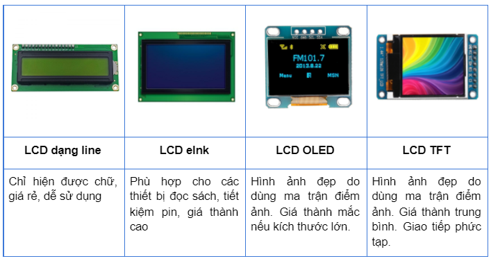
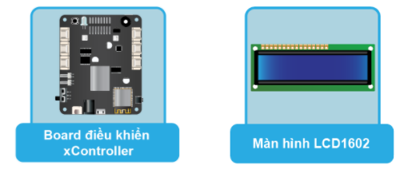
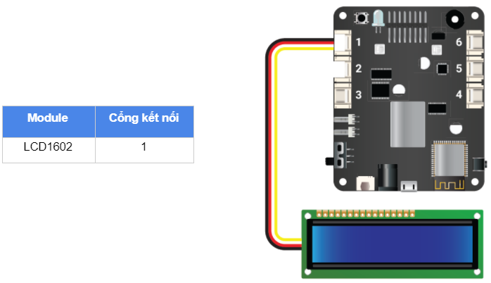

11. Bài học 10: Hiển thị thông tin lên màn hình LCD
Mục tiêu
Trong bài học này, chúng ta cùng tìm hiểu về màn hình LCD và viết chương trình để hiện dòng chữ “Hello World” lên màn hình.
Kiến thức mới
Màn hình là một thành phần khá phổ biến trong các thiết bị điện tử, được dùng để thể hiện thông tin cho người dùng. Có nhiều loại màn hình LCD phổ biến như LCD dạng line, OLED, eInk, TFT,…
{kind=link}
Màn hình LCD dạng line là một loại khá thông dụng và có giá thành rẻ. Bộ kit xBuild cung cấp sẵn một module màn hình LCD 1602 đơn sắc, sử dụng giao tiếp I2C, có thể hiển thị được 2 dòng chữ với tối đa 16 ký tự mỗi dòng.
Thiết bị cần sử dụng
{kind=link}
Kết nối phần cứng
{kind=link}
Viết chương trình
Mở phần mềm Arduino IDE.
Nếu bạn chưa cài đặt thư viện cho xController thì tham khảo bài học số 4 để tải và cài đặt thư viện vào Arduino IDE.
Copy đoạn code sau, click vào nút Verify để kiểm tra lỗi chương trình. Sau khi biên dịch không báo lỗi, bạn có thể nạp đoạn code vào board.
#include <LCD_1602.h>
LCD_1602 lcd(0x21);
void setup() {
lcd.begin(D1_1, D1_2);
lcd.backlight();
}
void loop(){
lcd.setCursor(0, 0);
lcd.print("OhStem");
lcd.setCursor(0, 1);
lcd.print("xin chao ban!");
delay(2000);
lcd.clear();
delay(1000);
}
Giải thích chương trình
#include <LCD_1602.h>
Khai báo thư viện để làm việc với màn hình LCD 1602.
LCD_1602 lcd(0x21);
Tạo một đối tượng tên là lcd và khai báo địa chỉ I2C. Màn hình LCD1602 có trong bộ kit sử dụng địa chỉ là 0x21.
lcd.begin(D1_1, D1_2);
Khởi tạo màn hình LCD và khai báo 2 chân IO (sử dụng cho giao tiếp I2C) để kết nối với module. Do chúng ta sử dụng cổng số 1 nên 2 chân IO tín hiệu tương ứng sẽ là D1_1 và D1_2.
lcd.backlight();
Bật đèn nền phía sau của màn hình lcd. Để tắt, ta sử dụng lệnh: lcd.noBacklight();
lcd.setCursor(0, 0);
Di chuyển vị trí in ký tự tiếp theo đến vị trí hàng 0 cột 0. Hàm này có cú pháp là setCursor(x,y) với x là cột và y là hàng.
lcd.print("OhStem");
In ra màn hình dòng chữ “OhStem” tại vị trí đã được cài đặt.
lcd.setCursor(0, 1);
lcd.print("xin chao ban!");
Để in ra dòng chữ “xin chao ban!” trên dòng thứ 2 của màn hình, chúng ta làm tương tự bằng cách thay đổi vị trí in ra và dùng lệnh print() để hiển thị.
lcd.clear();
Câu lệnh này sẽ xóa trắng màn hình. Tất cả những gì đang được hiển thị sẽ bị biến mất..
Sau khi chạy chương trình, bạn sẽ thấy dòng chữ “OhStem xin chào bạn!” được hiển thị liên tục trên 2 dòng của màn hình LCD (hiển thị trong 2 giây rồi biến mất trong 1 giây)